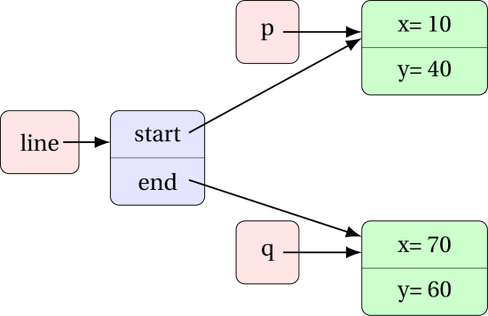
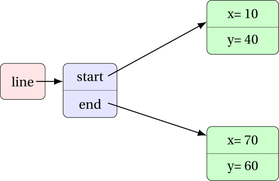

Classes - Composition
Assumed Knowledge:
Learning Outcomes:
- Understand composition in terms of classes.
Author: Gaurav Gupta
Composition
Consider the following class Point:
public class Point {
public int x, y;
public Point(int _x, int _y) {
x = _x;
y = _y;
}
}
Next, consider class Line:
public class Line {
public Point start, end;
public Line(Point p1, Point p2) {
start = p1;
end = p2;
}
}
Pay attention to the following statement very carefully!
Each instance of class Line holds references to two instances of class Point.
(Informally, we say, each Line contains two Point objects)
If I create an object of Line as:
Point p = new Point(10, 40);
Point q = new Point(70, 60);
Line line = new Line(p, q);
There are 5 references and 3 instances.
References (and types):
line:Lineline.start:Pointline.end:Pointp:Pointq:Point
Instances (and types):
- instance to which
linerefers:Line - instance to which
pandline.startrefer:Point - instance to which
qandline.endrefer:Point

One can also create anonymous objects thereby reducing the number of references to keep track of.
Line line = new Line(new Point(10, 40), new Point(70, 60));

Adding methods to the mix
Consider a slightly modified class definition of Point.
public class Point {
public int x, y;
public Point(int _x, int _y) {
x = _x;
y = _y;
}
public double distanceFromOrigin() {
return Math.sqrt(x*x + y*y);
}
public int compareTo(Point other) { //compare based on distance from origin
double d1 = this.distanceFromOrigin();
double d2 = other.distanceFromOrigin();
if(d1 > d2)
return 1;
if(d1 < d2)
return -1;
return 0;
}
}
We can then update the class Line to get the point on the line that is further from the origin, as,
public class Line {
public Point start, end;
public Line(Point p1, Point p2) {
start = p1;
end = p2;
}
public Point getPointFurtherFromOrigin() {
/*
* left for you as an exercise
* return p1 or p2 based on whichever is further from the origin
* return p1 if they are both equidistant from the origin
*/
}
}
Homework - 1
Task 1
Draw the memory diagram for the objects created inside the main method in the following code. Also, state the number of instances and references in the diagram.
class Date {
public int day, month, year;
public Date(int d, int m, int y) {
date = d;
month = m;
year = y;
}
}
class Time {
public int hour, minute, second;
public Time(int h, int m, int s) {
hour = h;
minute = m;
second = s;
}
}
class DateTime {
public Date date;
public Time time;
public Date(Date d, Time t) {
date = d;
time = t;
}
}
public class Client {
public static void main(String[] args) {
Date d1 = new Date(26, 5, 2020);
Time t1 = new Time(19, 54, 0);
DateTime dt1 = new DateTime(d1, t1);
}
}
Task 2
Draw the memory diagram for the objects created inside the main method in the following code. Also, state the number of instances and references in the diagram.
class Date {
public int day, month, year;
public Date(int d, int m, int y) {
data = d;
month = m;
year = y;
}
}
class Time {
public int hour, minute, second;
public Time(int h, int m, int s) {
hour = h;
minute = m;
second = s;
}
}
class DateTime {
public Date date;
public Time time;
public Date(Date d, Time t) {
date = d;
time = t;
}
}
class QuizAttempt {
public DateTime start, end;
public int marksObtained;
public QuizAttempt(DateTime s, DateTime e, int m) {
start = s;
end = e;
marksObtained = m;
}
}
public class Client {
public static void main(String[] args) {
Date d1 = new Date(26, 5, 2020);
Time t1 = new Time(19, 54, 0);
DateTime dt1 = new DateTime(d1, t1);
Date d2 = new Date(27, 5, 2020);
Time t2 = new Time(01, 13, 40);
DateTime dt2 = new DateTime(d2, t2);
QuizAttempt attempt = new QuizAttempt(dt1, dt2, 40);
}
}
Task 3
For the same code as task 2, write down statements that store the following values in variable of the correct type.
- The date on which the attempt began.
- The time at which the attempt ended.
- The minute at which the attempt began.
- The hour at which the attempt ended.
- The marks obtained in the attempt.
-
Assuming the existence of the following method in class
DateTime, the number of seconds taken for the attemptpublic int getSecondsTo(DateTime other) { //returns number of seconds between calling object //and parameter object. returned value is positive if //parameter object is after calling object in //the chronological sense. }